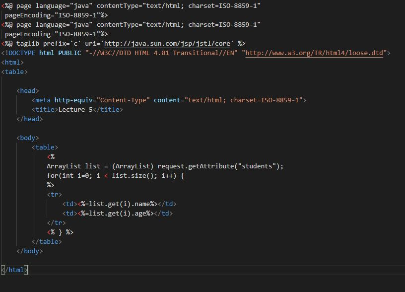

- Rewrite the JSP page in the first demo (forEach) to use scripting instead of the JSTL
forEach.
- 
- How do custom tags relate to JSTL?
- Custom tags are user defined JSTL actions. The purpose of custom tags is to creates custom functionality
that can be packaged and reused by content
developers using JSTL.
- What is the role of the URI in the TLD and the taglib directive?
-
The uri attribute value resolves to a location
the container understands and the prefix
attribute informs a container what bits of
markup are custom actions. URI directs the container to
locations of custom TLD and taglib directives.
- What is a tag handler class?
- Tag handler class are the classes where We have to define the tag and its actions.
TagSupport is the base class used for simple tags.
This class can be found in the javax.servlet.jsp.tagext package.
- What is the role of attribute setters in a tag handler class?
-
Attribute setters help set attributes of tags such as various styles, colors etc.
- What is the role of the doTag() method in a tag handler class?
-
doTag() method renders a custom tag to the view page.
- Give 5 different methods for maintaining state information (count each attribute scope as one
method).
-
- request scope: destroyed when servlet finishes processing request
- session scope: destroyed when user closes browser
- application scope destroyed when Container stopped.
- Cookies saved on browser, temporary or permanent
- Hidden fields on a form
- What does the operation getJspContext().getOut().write(“Hi Bob”) do when called in
a doTag() method?
- It sets the tag value to "Hi Bob"
- What does the operation getJspBody().invoke(null) do when called in a doTag()
method?
-
When getJspBody().invoke(null) is called in a doTag(), it outputs result from
the execution of the tag body that gets passed to the client